| ✅ | ✅ | ✅ | ✅ | ✅ | ✅ |
|---|
Remote Control¶


- class Remote(name=None, timeout=10000)¶
LEGO® Powered Up Bluetooth Remote Control.
When you instantiate this class, the hub will search for a remote and connect automatically.
The remote must be on and ready for a connection, as indicated by a white blinking light.
- Parameters:
- name(name)¶
- name() str
Sets or gets the Bluetooth name of the remote.
- Parameters:
name (str) – New Bluetooth name of the remote. If no name is given, this method returns the current name.
Examples¶
Changing the remote light color¶
from pybricks.pupdevices import Remote
from pybricks.parameters import Color
from pybricks.tools import wait
# Connect to the remote.
remote = Remote()
while True:
# Set the color to red.
remote.light.on(Color.RED)
wait(1000)
# Set the color to blue.
remote.light.on(Color.BLUE)
wait(1000)
Using the timeout setting¶
You can use the timeout argument to change for how long the hub searches
for the remote. If you choose None, it will search forever.
from pybricks.pupdevices import Remote
# Connect to any remote. Search forever until we find one.
my_remote = Remote(timeout=None)
print("Connected!")
If the remote was not found within the specified timeout,
an OSError is raised. You can catch this exception to run
other code if the remote is not available.
from pybricks.pupdevices import Remote
try:
# Search for a remote for 5 seconds.
my_remote = Remote(timeout=5000)
print("Connected!")
# Here you can write code that uses the remote.
except OSError:
print("Could not find the remote.")
# Here you can make your robot do something
# without the remote.
Changing the name of the remote¶
You can change the Bluetooth name of the remote. The factory default name is
Handset.

from pybricks.pupdevices import Remote
# Connect to any remote.
my_remote = Remote()
# Print the current name of the remote.
print(my_remote.name())
# Choose a new name.
my_remote.name("truck2")
print("Done!")
You can specify this name when connecting to the remote. This lets you pick the right one if multiple remotes are nearby.
from pybricks.pupdevices import Remote
from pybricks.tools import wait
# Connect to a remote called truck2.
truck_remote = Remote("truck2", timeout=None)
print("Connected!")
wait(2000)